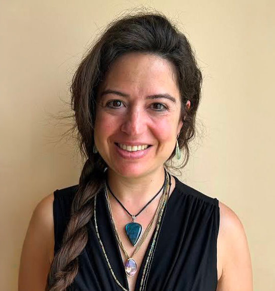
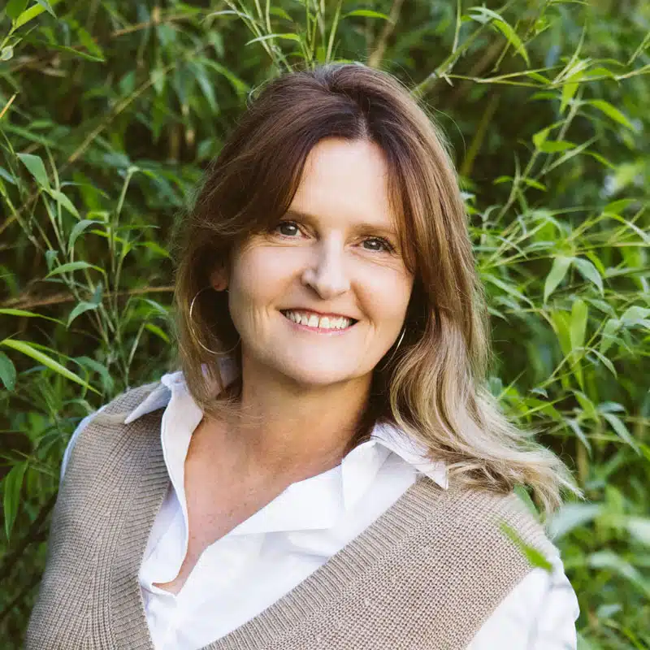

Céline Gili
Naturopathe DF · Formatrice · Mentore
Techniques manuelles (massages, drainage, réflexologie), aromathérapie, micronutrition, bases d’astromédecine.
En tant que mentore OdA AM, je vous aide à consolider votre posture thérapeutique et à maîtriser le déroulé de vos anamnèses. Forte de plus de 25 ans d’expérience, je vous entraînerai à clarifier les différentes pistes possibles, faire émerger une synthèse et hiérarchiser les priorités. L’objectif est de vous apporter davantage de structure, de confiance et d’autonomie dans votre pratique.
Découvrir Céline →

Lilian Spichtig
Naturopathe DF · Formatrice · Mentore
Santé de la femme, digestion et pratique professionnelle.
En tant que mentor, je mets à votre disposition l’expérience acquise au fil de nombreuses années de pratique clinique, notamment dans la santé de la femme, de l’enfant et la détox. Mon parcours m’a également permis d’acquérir une solide expérience dans la gestion d’un cabinet et au sein de différentes institutions de la médecine complémentaire. Je vous accompagne avec une vision concrète du terrain, pour gagner en confiance, affiner votre pratique et aller à l’essentiel.
Découvrir Lilian →
Sophie Vernier
Naturopathe DF · Formatrice · Mentore
Techniques traditionnelles, nutrition et thérapies manuelles.
Sophie partage son expérience des ventouses, du drainage
lymphatique, des réflexothérapies, de la chrononutrition et de
l'accompagnement du jeûne, dans une approche globale de la
naturopathie MTE.
Découvrir Sophie →